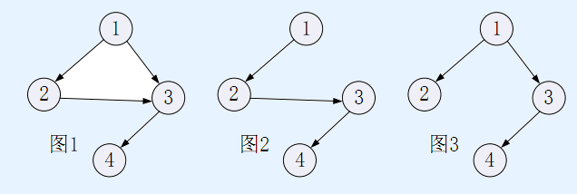

「恒逸，你相信灵魂的存在吗？」
郭恒逸和姚枫茜漫步在枫音乡的街道上。望着漫天飞舞的红枫，枫茜突然问出
这样一个问题。
「相信吧。不然我们是什么，一团肉吗？要不是有灵魂……我们也不可能再见
到你姐姐吧。」
恒逸给出了一个略微无厘头的回答。枫茜听后笑了笑。
「那你仔细观察过枫叶吗？」
说罢，枫茜伸手，接住了一片飘落的枫叶。
「其实每一片枫叶都是有灵魂的。你看，枫叶上不是有这么多脉络吗？我听说，
枫叶上有一些特殊的位置，就和人的穴位一样。脉络都是连接在这些穴位之间的。
枫树的灵魂流过每片枫叶的根部，沿着这些脉络，慢慢漫进穴位，沁入整片枫叶。
也是因为这个原因，脉络才都是单向的，灵魂可不能倒着溜回来呢。」
恒逸似懂非懂地点了点头。枫茜接着说了下去。
「正是因为有了灵魂，每片枫叶才会与众不同。也正是因为有了灵魂，每片枫
叶也都神似其源本的枫树，就连脉络也形成了一棵树的样子。但如果仔细看的话，
会发现，在脉络树之外，还存在其它的非常细的脉络。虽然这些脉络并不在树上，
但他们的方向也同样顺着灵魂流淌的方向，绝不会出现可能使灵魂倒流的回路。」
恒逸好像突然想到了什么。
「那这些脉络岂不是可以取代已有的脉络，出现在脉络树上？」
枫茜闭上了眼睛。
「是啊，就是这样。脉络树并不是唯一的。只要有一些微小的偏差，脉络树就
可能差之万里，哪怕是在这同一片枫叶上。就像我们的故事，结局也不是唯一的。
只要改变一个小小的选项，故事流程可能就会被彻底扭转。」
「真是深奥啊……」
恒逸盯着这片红枫，若有所思地说。枫茜继续说道。
「还不止如此呢。所有的脉络都不会永恒存在，也不会永恒消失。不管是脉络
树上的脉络，还是之外的细小脉络，都是如此。存在的脉络可能断开消失，消失的
脉络也可能再次连接。万物皆处在永恒的变化之中，人与人之间的羁绊也是。或许
有一天，我们与大家的羁绊也会如同脉络一样，被无情地斩断。或许我们也终将成
为“枫音乡的过客”。或许这一切都会是必然，是枫树的灵魂所决定的……」
枫茜的眼角泛起了几滴晶莹剔透的泪珠。恒逸看着这样的枫茜，将她抱入怀中。
「别这样想，枫茜。就算脉络断开，也有可能还会有新的脉络树，也还会与枫
树的根相连。这样的话，我们的羁绊仍然存在，只是稍微绕了一些远路而已。无论
如何，我都不会离开你的。因为你是我穷尽一生所寻找的，我的真恋啊！」
两人的目光对上了。枫茜幸福地笑了，把头埋进了恒逸的怀抱。从远方山上的
枫林中，传来了枫的声音。
【问题描述】
不妨假设枫叶上有 n个穴位，穴位的编号为 1 ~ n。有若干条有向的脉络连接
着这些穴位。穴位和脉络组成一个有向无环图——称之为脉络图（例如图 1），穴
位的编号使得穴位 1 没有从其他穴位连向它的脉络，即穴位 1 只有连出去的脉络；
由上面的故事可知，这个有向无环图存在一个树形子图，它是以穴位 1为根的包含
全部n个穴位的一棵树——称之为脉络树（例如图 2和图 3给出的树都是图1给出
的脉络图的子图）；值得注意的是，脉络图中的脉络树方案可能有多种可能性，例
如图2和图 3就是图 1给出的脉络图的两个脉络树方案。

脉络树的形式化定义为：以穴位 r 为根的脉络树由枫叶上全部 n个穴位以及 n
- 1 条脉络组成，脉络树里没有环，亦不存在从一个穴位连向自身的脉络，且对于
枫叶上的每个穴位 s，都存在一条唯一的包含于脉络树内的脉络路径，使得从穴位
r 出发沿着这条路径可以到达穴位 s。
现在向脉络图添加一条与已有脉络不同的脉络（注意：连接 2个穴位但方向不
同的脉络是不同的脉络，例如从穴位3到4的脉络与从4到3的脉络是不同的脉络，
因此，图 1 中不能添加从 3 到 4 的脉络，但可添加从 4 到 3 的脉络），这条新脉络
可以是从一个穴位连向自身的（例如，图 1 中可添加从 4 到 4 的脉络）。原脉络图
添加这条新脉络后得到的新脉络图可能会出现脉络构成的环。
请你求出添加了这一条脉络之后的新脉络图的以穴位 1 为根的脉络树方案数。
由于方案可能有太多太多，请输出方案数对 1,000,000,007 取模得到的结果。